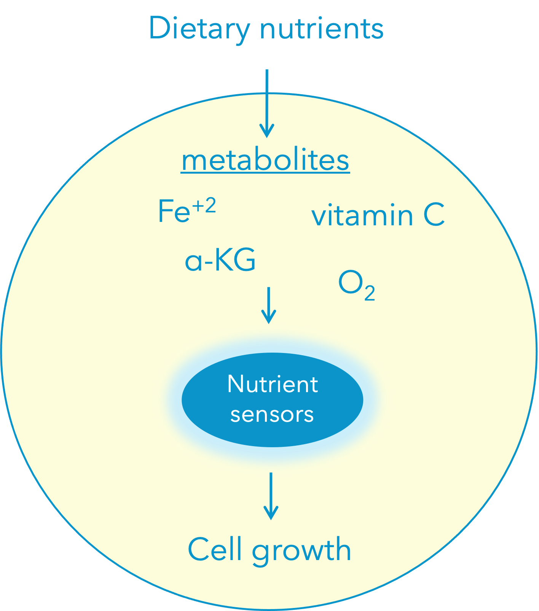

 To adapt to different environmental conditions, cells need to respond appropriately to the stimuli they receive. This stimuli is sensed by cellular sensors which activate signaling cascades that modulate cell behavior to promote environmental adaptations.
Nutrient sensors allow cells to respond to nutrient availability by activating cell growth promoting pathways. The iron (II) and alpha-ketoglutarate (α-KG)-dependent hydroxylases are a family of nutrient sensors that regulate key cellular processes. Hydroxylases in the presence of Iron (II), α-KG, O2, and ascorbate (vitamin C) hydroxylate specific substrates to activate specific signaling pathways.
This nutrient sensing pathway is deregulated in disease by alterations in the molecular regulators, as well as by the abundance of specific nutrients. For example, sustained lack of vitamin C in our diets causes scurvy, a disease affecting the connective tissue. Our lab investigates how cells respond to specific metabolic stimuli by dissecting the mechanisms whereby α-KG dependent hydroxylases regulate growth-promoting pathways with a focus on disease.
Role of diet in glioblastoma malignancy
Glioblastomas (GBM) are the most aggressive tumor type of the brain with a median survival life of 15 months. The first line of therapy for GBM was established in 2005 and consists of surgical resection, radiotherapy, and chemotherapy with temozolomide. GBM tumors frequently develop resistance to treatment and to date, there is no standard therapy for recurrent GBM.
The contribution of lifestyle to increase risk of cancer incidence is more and more being established in different cancer types. In GBM, the influence of diet and other lifestyle habits on GBM development and progression is still unclear. Our laboratory investigates the role specific diets play in activating metabolic and molecular pathways that promote cell growth in GBM cells. Our goal is to identify specific GBM vulnerabilities that will help us in the search for effective therapies. We hope that our research will lead us to the design of dietary interventions that not only improve the outcome of GBM patients but perhaps help us in preventing the initiation of the disease.
Regulators of nucleolar activity in disease
 One of the main characteristics of cancer cells is its capacity to continually increase biomass production. To achieve that, cancer cells increase nucleolar activity and size to boost ribosome biogenesis for cell growth. Indeed, nucleoli number and size are frequently used by pathologists to grade solid tumors.
One of the main characteristics of cancer cells is its capacity to continually increase biomass production. To achieve that, cancer cells increase nucleolar activity and size to boost ribosome biogenesis for cell growth. Indeed, nucleoli number and size are frequently used by pathologists to grade solid tumors.
In the recent years, our work and the work of others have shown that cancer cells switch on specific metabolic and molecular pathways to maintain the rapid pace of their hyperactive nucleolus. Inhibition of these pathways causes nucleolar stress leading to decrease ribosome biogenesis and stabilization of the tumor suppressor p53 which in turns decreases tumor growth. This is important in cancers such as GBM where more than 80% of patients have WT p53.
Our lab investigates the specific regulators that promote nucleolar activity in cancer cells with an emphasis on GBM. Our goal is to identify the molecular pathways that lead to increase nucleolar activity in GBM with the hope of finding novel pharmaceutical targets that we can use in the clinic to treat GBM and other cancer types.